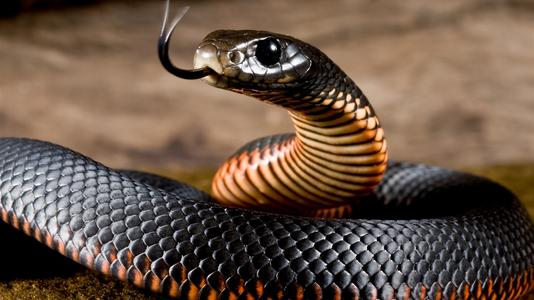
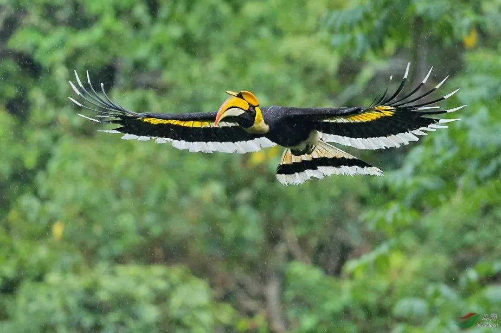
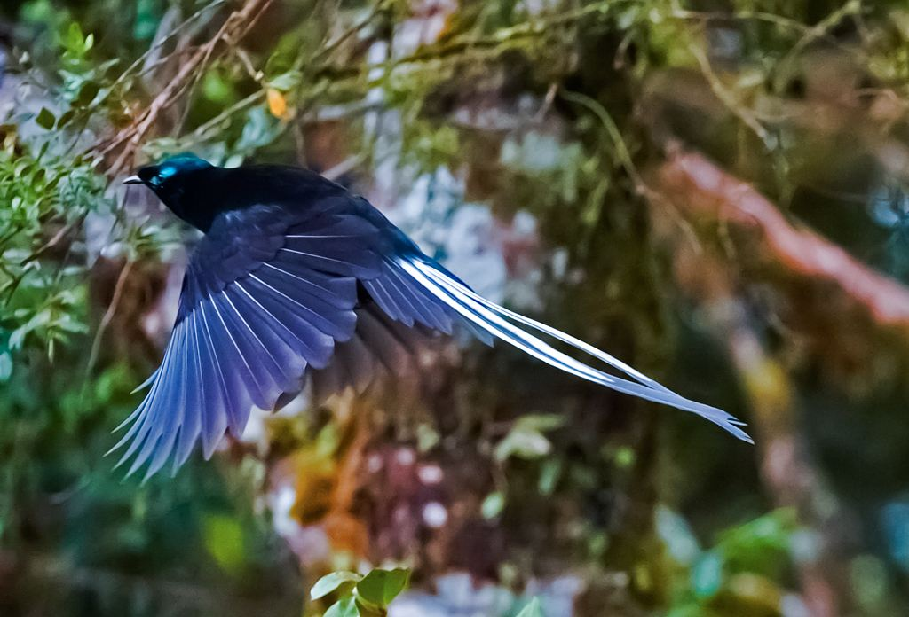
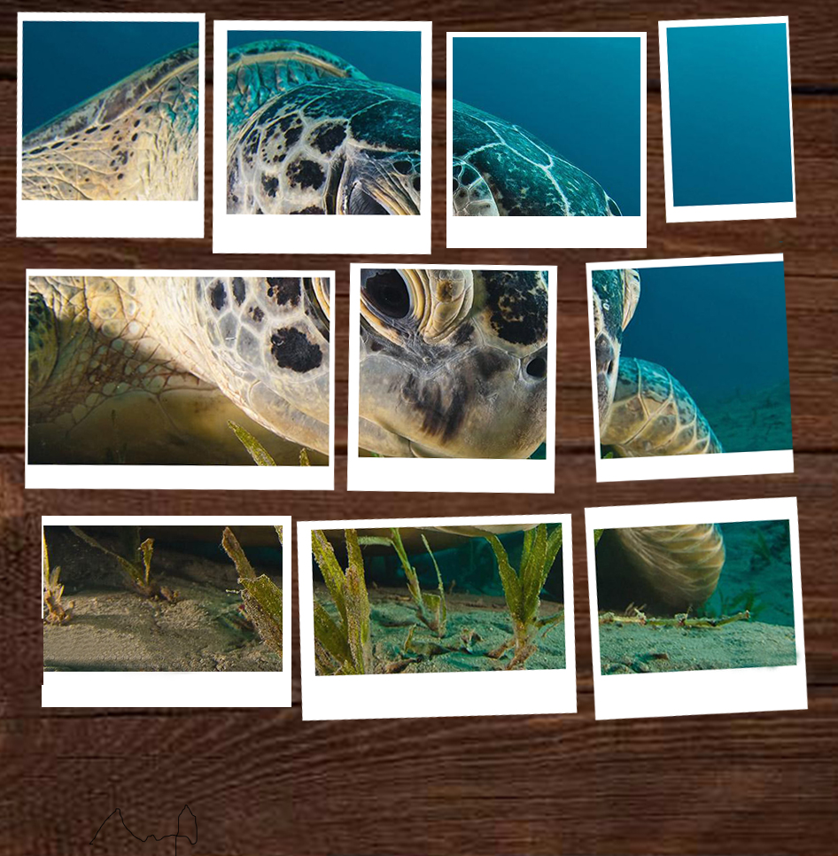
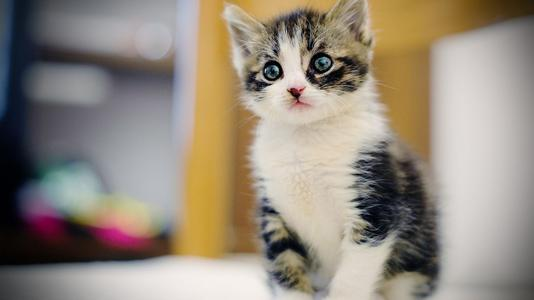
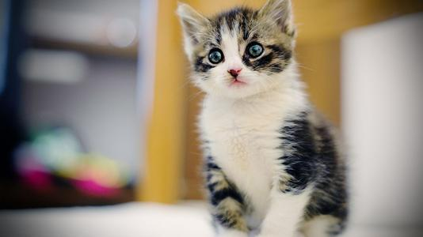
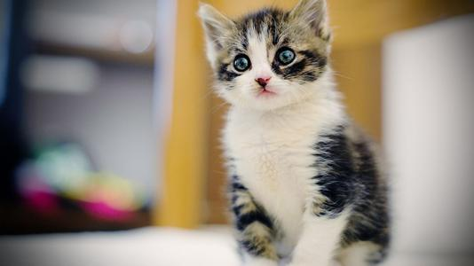

人们不喜欢蛇，对于蛇的恐惧，是原始人祖先通过基因留给我们的信息
黑曼巴蛇
黑曼巴蛇（学名：Dendroaspis polylepis）：体形细长，体长一般都在2米以上，最长记录可达4.5米。头部呈长方形，体色为灰褐色，由背脊至腹部逐渐变浅。黑曼巴蛇的口腔内部为黑色，当张大口时可以清楚地见到。上颚前端在攻击时能向上翘起，使其毒牙能刺穿接近平面的物体。它属于前沟牙毒蛇，毒液为神经性毒，毒性极强。
犀鸟
犀鸟（Anthracoceros albirostris）是一种奇特而珍贵的大型鸟类，佛法僧目犀鸟科，为本科动物的统称。犀鸟以某些种类上嘴基部的骨质盔突而著名。嘴就占了身长的1/3到一半，宽扁的脚趾非常适合在树上的攀爬活动，一双大眼睛上长有粗长的眼睫毛。最古怪的是在它的头上。长有一个铜盔状的突起，叫做盔突，就好像犀牛的角一样，故而得名犀鸟。主要分布于非洲及亚洲南部，大部分犀鸟生活在非洲和亚洲的热带雨林地区，以树上那些多半是啄木鸟啄出来的空洞为巢。
极乐鸟
极乐鸟科（学名：Paradisaeidae）有16属41种。大部分雄鸟色彩缤纷，具有复杂华丽的饰羽。雌鸟和雄性未成鸟则具有暗淡的保护色，腹部常有横斑。有些单配制种类为全身黑色或蓝黑色。该科鸟体长15~110厘米，体重50~450克。雄鸟一般大于雌鸟。



 

